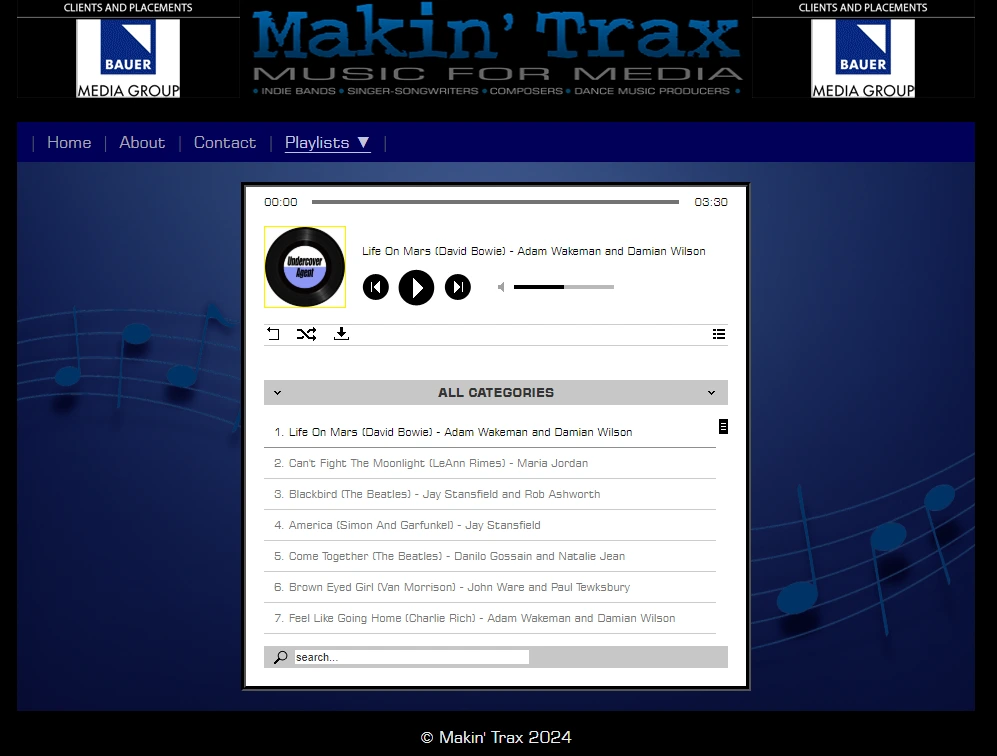

See for yourself! ➜
About MakingTrax
Nathan took up this project when the client - his father, and CEO of Makin' Trax, an established music library - asked him to help with his site.
There were a few issues to be resolved:
- The main UI was an image map which meant any additional pages to be added to the navigation bar required editing the background image used. Nathan copied the design as a simple WEBP image with HTML elements as buttons for accessibility, useability, and scalability.
- The playlist was not working correctly, as only some songs would play. Nathan found the error being mislabelled MP3's and set out a simple naming structure to adhere to for all future additions to the playlists.
- The client wanted a form for users of the site to be able to contact either himself or his partner, depending on the query. Nathan set about creating the form, learning PHP as he went so that the form would not accept injection or other malicious code. He also added a Google Authenticator for good measure.
- Lastly was minor tidying up of legacy HTML and adjusting some styles as per request.
His client was very happy with the work done, and Nathan has since taken over in looking after maintenance and future additions to the site.
Since this work was undertaken, the site is no longer blocked from Google Search, and the client has had multiple users using the form to get in touch.